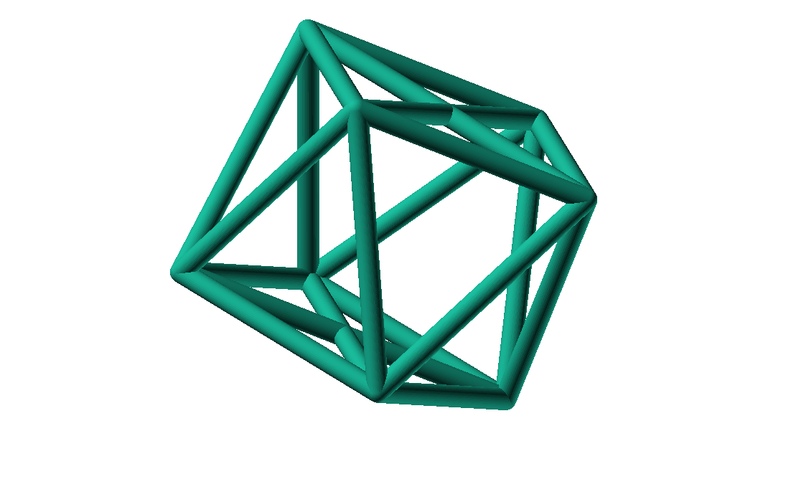
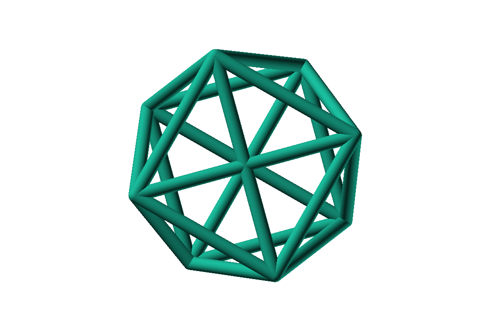
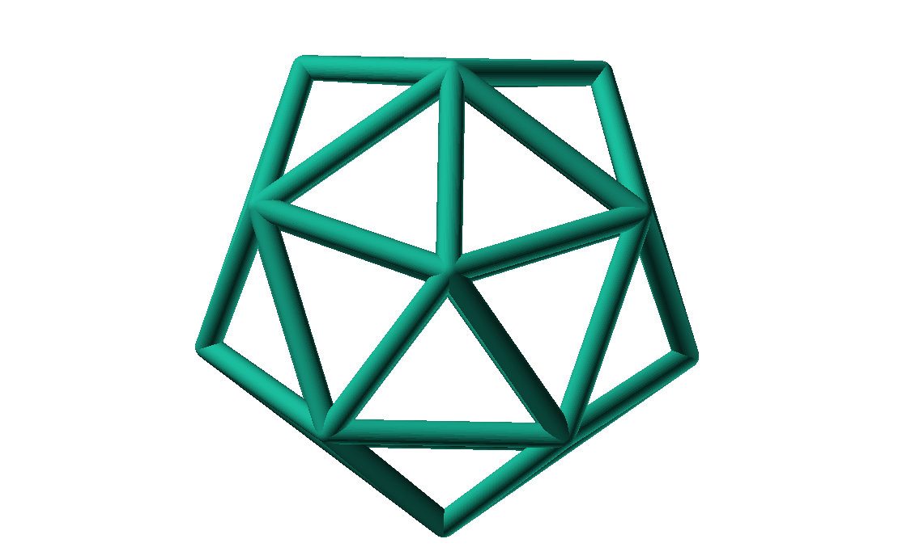

Un conjunto de cargas eléctricas del mismo signo en un conductor tienden a repelerse, de forma que se sitúan en una configuración de mínima energía. Esta configuración sitúa las cargas en la superficie del conductor.
El siguiente programa de OpenSCAD simula el comportamiento de varias cargas encerradas en un conductor esférico. Tras encontrar la configuración de mínima energía, se representa como las aristas del poliedro que resulta del cubrimiento convexo de las cargas.
Los poliedros generados presentan un alto grado se simetría. La forma final alcanzada parece depender únicamente del número de vértices iniciales, excepto por algunas simetrías especulares.
1 Cálculo del poliedro
Un conjunto de cargas eléctricas del mismo signo en un conductor tienden a repelerse, de forma que se sitúan en una configuración de mínima energía. Esta configuración sitúa las cargas en la superficie del conductor.
1.1 Determinación de la posición de los vértices
Para determinar la posición final de las cargas dentro de la esfera se realiza una simulación del movimiento de las cargas eléctricas dentro de la esfera, hasta que su posición se estabilice. Para ello se siguen los siguientes pasos:
- Se inicializa el conjunto \(C\) de las \(N\) cargas a posiciones \(c_i\) aleatorias del espacio.
- Por cada carga \(c_i \in C\):
- La fuerza de repulsión con cada una de las otras cargas \(c_j\) se calcula como \[f_{ij} = K \cdot \frac{(c_i-c_j)}{|(c_i-c_j)|^2}\] La constante \(K\) debería representar factores como el intervalo de tiempo de cada paso de la simulación y las masas de las cargas y su resistencia al movimiento, aunque en la práctica se ajusta a valores más altos para acelerar el resultado.
- Se suman dichas fuerzas para encontrar la fuerza total resultante \(f_i\) sobre \(c_i\). \[f_i = \sum_{j \neq i}^{N} f_{ij}\]
- Por cada carga \(c_i\):
- Se calcula la nueva posición de la carga \(i\) como \(c'_i = c_i + f_i\).
- La posición resultante se proyecta sobre una esfera de radio \(r\) centrada en el origen \[c''_i = \frac{c'_i}{|c'_i|}\]
- Las nuevas posiciones \(c_i\) son los valores de \(c''_i\)
- Se itera desde el paso 2 hasta alcanzar el criterio de terminación.
- El criterio de terminación del bucle es la estabilidad de las posiciones \(c_i\), comparando un umbral \(\epsilon\) con \[\sum_{i}^{N} |c''_i - c_i|\]
La figura 2 muestra gráficamente el proceso del cálculo de la nueva posición de una carga, para dos dimensiones y tres cargas totales.
Figura 2: Cálculo de la nueva posición \(c''_1\) de la carga \(c_1\) para un total de 3 cargas
1.2 Cubrimiento convexo de los vértices
Tras a primera parte del cálculo, se obtienen las posiciones \(c_i\) de los vértices del poliedro. Cada triplete de puntos define uno de estos dos tipos de plano:
- Una cara exterior (o parte de una cara) de este poliedro.
- O bien, un triángulo interior que no forma parte del cubrimiento convexo de los vértices.
El algoritmo utilizado para determinar las aristas exteriores del poliedro es el siguiente:
- Se parte del conjunto \(T\) de todos los tripletes \[ T = \{ \{c_i,c_j,c_k\} | 1 \leq i < j < k \leq N \}\]
- Por cada triplete \(\{t_1,t_2,t_3\} \in T\)
- Se calcula la ecuación del plano que contiene sus tres puntos \(ax + by + cy + d = 0\), siendo \(\times\) el producto vectorial y \(\cdot\) el producto escalar. \[(a,b,c) = (t_2-t_1) \times (t_3, t_1)\] \[d = -(a,b,c)\cdot t_1\]
- Se sustituye cada punto \(c_i \in C \setminus \{t_1,t_2,t_3\}\) en la ecuación del plano obtenida. Si el triplete pertenece al cubrimiento convexo, todos los resultados tendrán el mismo signo (o \(0\)).
- Si el triplete pertenece al cubrimiento, sus aristas \(\{t_1,t_2\}\), \(\{t_2,t_3\}\) y \(\{t_3,t_1\}\) se añaden al conjunto \(A\) de aristas exteriores.
2 Ejemplos de poliedros para \(4\leq N \leq 24\)
Los ficheros STL de definición de cada poliedro pueden generarse desde la línea de comandos de OpenSCAD. El programa se invoca con los parámetros necesarios para fijar el número de vértices a calcular, así como la precisión del cálculo (variables $fn y $fa). El shellscript del listado 1 muestra un bucle con el cálculo de los poliedros desde 4 a 24 vértices.
El fichero electrostatic-polyhedron.scad se describe en el apartado 3.
#!/bin/sh SCADFILE=./electrostatic-polyedron.scad poliedro () { local N=$1 openscad -o stl/poliedro-$N.stl -D N=$N -D '$fn=50' -D '$fa=50' "$SCADFILE" } for i in $(seq 4 24) do poliedro $i done
Los ficheros STL generados pueden visualizarse con OpenSCAD, utilizando la orden import, como se muestra en el listado 2
STLFILE="images/poliedro-10.stl"; ANGLE=20; rotate([ANGLE,0,0]){ translate([0,0,0]) { import(STLFILE); } }
Las imágenes utilizadas en la tabla 1 se han generado con el programa del listado 1 y el script del listado 3
#!/bin/bash -x SCADFILE=./view-stl.scad imagenes() { local N=$1 local BIG=images/poliedro-$N.png local SMALL=images/poliedro-$N-small.png openscad -o $BIG --camera=0,0,525,0,0,0 --colorscheme=Nature -D STLFILE=\"stl/poliedro-$N.stl\" "$SCADFILE" convert -resize 128x128 $BIG $SMALL } for i in $(seq 4 24) do imagenes $i done
Los ficheros STL se han importado en el servicio Sculpteo para su visualización en línea. La tabla 1 incluye la lista de poliedros y su URL.

2.1 Poliedros regulares
Dado el grado de simetría del proceso, no es sorprendente que se consigan varios poliedros regulares. Con \(4\), \(6\) y \(12\) vértices se obtiene un tetraedro, octaedro e icosaedro, respectivamente.
2.2 Poliedros con cuadrados
Para \(8\) y \(24\) vértices se obtienen poliedros con varias caras cuadradas, además de las triangulares. Este hecho no puede probarse con el proceso aquí presentado, ya que es un método iterativo de simulación, y se necesitaría una demostración matemática.

Figura 3: \(N=8\) genera un poliedro con dos caras cuadradas

Figura 4: \(N=8\) posee una proyección con contorno octogonal regular

Figura 5: \(N=24\) consigue un poliedro con 6 caras cuadradas, que podría tallarse en un cubo
Para \(17\) el poliedro generado no contiene cuadrados por muy poco. Aún así se incluye en este apartado por su simetría pentagonal. El autor ha bautizado esta forma geométrica como pachiedro.

Figura 6: \(N=17\) ofrece una perspectiva con simetria pentagonal

Figura 7: En esta vista de \(N=17\) se observan uno de los casi 5 cuadrados del poliedro de forma tangencial, abajo a la izquierda
3 Implementación
Los ficheros descritos en este apartado están disponibles en un repositorio Github
- Repositorio: https://github.com/alvarogonzalezsotillo/polyhedron
- Fichero principal
SCAD: electrostatic-polyhedron.scad - Este documento
- En formato
ORG: electrostatic-polyhedron.org - En formato
PDF(a partir del ficheroORG): electrostatic-polyhedron.pdf - En formato
HTML(a partir del ficheroORG): electrostatic-polyhedron.html
- En formato
3.1 Características del lenguaje
El lenguaje de OpenSCAD es de tipo funcional, con funciones matemáticas básicas.
- No hay bucles de tipo mientras, y deben implementarse como funciones recurivas.
- Distingue entre funciones (sin efectos laterales) y módulos (que crean efectivamente los sólidos).
- Una consecuencia de que las funciones no tengan efectos laterales es la imposibilidad de trazar la ejecución de las mismas, ya que la instrución
logse considera un efecto lateral.
- Una consecuencia de que las funciones no tengan efectos laterales es la imposibilidad de trazar la ejecución de las mismas, ya que la instrución
- Las funciones admiten parámetros por defecto.
- Permite la construcción de listas de objetos, similares a arrays.
- Los objetos pueden ser, entre otros, números y otras listas.
- Un punto tridimensional se especifica como una lista de tres valores.
- Ofrece facilidades para for comprehensions.
En la implementación se ha optado por utilizar las mínimas funciones del sistema.
3.2 Cálculo de la posición final de las cargas
OpenSCAD no ofrece facilidades básicas como la distancia entre puntos tridimentsionales. Esto permite incluir esta función simple a modo de ejemplo de sintaxis de su lenguaje en el listado 4
function distancia(a,b) = let( dx = a[0]-b[0], dy = a[1]-b[1], dz = a[2]-b[2] ) sqrt(dx*dx + dy*dy + dz*dz);
A diferencia de la mayoría de lenguajes, OpenSCAD no ofrece bucles de tipo mientras. Estas construcciones deben emularse con funciones recursivas, que utilicen a su vez operador condicional ternario. En el ejemplo del listado 5, se utiliza una función recursiva para recorrer una lista y acumular sus valores. puede verse también el uso de parámetros por defecto.
function sumaPuntos(lista) = suma(lista,[0,0,0],0); function suma(lista,retorno=0,i=0) = i>=len(lista) ? retorno : suma(lista,lista[i]+retorno,i+1);
Los bucles for siempre forman parte de un for comprehension, lo que implica que su resultado no puee ser un valor único, sino una lista con una posición por cada vuelta. Para conseguir acumular la distancia total entre dos listas de puntos es necesario, por tanto, un bucle for y un bucle while implementado como función recursiva (ver listado 6). Las fuerzas aplicadas en cada carga se calculan también como un for comprehension, como se muestra en el listado 7
function distancias(puntos1, puntos2 ) = [ for( i =[0:1:len(puntos1)-1] ) distancia(puntos1[i],puntos2[i]) ]; function errorTotal(puntos1,puntos2) = suma(distancias(puntos1,puntos2));
function fuerzasParaPunto( p, puntos ) = [ for( punto = puntos ) let( d = distancia(p,punto) ) if( punto != p ) (p - punto)/(d*d) ]; function modulo(vector) = distancia(vector,[0,0,0]);
La función nuevoPuntoParaIteracion determina la nueva posición de un punto, y la función iteracion utiliza la anterior para calcular la nueva posición de todos los puntos (listado 8)
function normaliza( p, radio ) = radio * p / modulo(p); function nuevoPuntoParaIteracion(p,puntos, radio=100) = let( fuerzas = fuerzasParaPunto( p, puntos ), factorDeAmpliacion = radio*radio, fuerza = sumaPuntos(fuerzas)*factorDeAmpliacion, nuevoPunto = p + fuerza ) normaliza(nuevoPunto,radio); function iteracion(puntos, radio=100) = [ for( i = puntos) nuevoPuntoParaIteracion(i,puntos,radio) ];
La función iteraCalculoDePuntos realiza un bucle while (nuevamente, en forma de función recursiva) hasta que la diferencia de posición entre un paso y el anterior es menor de un umbral. Por seguridad, se incluye también un límite en el número máximo de iteraciones como parámetro por defecto, tal y como se muestra en el listado 9.
function iteraCalculoDePuntos( puntos, radio=100, errorMaximo=0.01, contador=0, iteracionesMaximas=1000 ) = let( siguientesPuntos = iteracion(puntos,radio), error = errorTotal(siguientesPuntos, puntos) ) error <= errorMaximo || contador >= iteracionesMaximas ? siguientesPuntos : iteraCalculoDePuntos(siguientesPuntos, radio, errorMaximo, contador+1,iteracionesMaximas);
Tan solo resta comenzar con un número determinado de puntos aleatorios e iterarlos hasta conseguir llegar al equilibrio (listado 10)
function puntoAleatorio() = rands(-1000,1000,3); function puntosAleatorios(n) = [for( i=[0:n-1] ) puntoAleatorio()]; function verticesPoliedroElectrostatico(n) = iteraCalculoDePuntos(puntosAleatorios(n));
3.3 Cálculo del cubrimiento convexo
Comenzamos definiendo primitivas básicas para el trabajo con vectores: producto escalar y vectorial. El producto vectorial ya está implementado en OpenSCAD (función cross), pero se incluye en el listado 11 por completitud del algoritmo.
function productoEscalar(v1,v2) = suma( [ for(i=[0:len(v1)-1]) v1[i]*v2[i] ] ); function productoVectorial(v1,v2) = [ v1[1]*v2[2] - v1[2]*v2[1], - v1[0]*v2[2] + v1[2]*v2[0], v1[0]*v2[1] - v1[1]*v2[0] ];
Utilizando los productos, podemos definir la ecuación del plano que pasa por tres puntos, y una función que determina si un punto pertenece a un plano, o si queda a un lado o a otro del mismo (listado 12).
function ecuacionDePlanoPorTresPuntos(p1,p2,p3) = let( puntoEnElPlano = p1, vector1 = p2-p1, vector2 = p3-p1, normal = productoVectorial(vector1,vector2), d = -productoEscalar(puntoEnElPlano,normal) ) [normal,d]; function ecuacionDePlanoPorTresPuntosEnLista(lista) = ecuacionDePlanoPorTresPuntos(lista[0],lista[1],lista[2]); function sustituyeEcuacionPlano(ecuacion,punto) = productoEscalar(ecuacion[0],punto) + ecuacion[1];
Las funciones del listado 13 resumen el cálculo de aristas ocultas. Necesitan varias funciones de utilidad definidas en el listado 14.
function quitarAristasDuplicadas(aristas,ret=[],indice=0) = indice >= len(aristas) ? ret : ( let( a1 = aristas[indice], a2 = [a1[1],a1[0]] ) contenidoEnLista(a1,ret) || contenidoEnLista(a2,ret) ? quitarAristasDuplicadas(aristas,ret,indice+1) : quitarAristasDuplicadas(aristas,agregarALista(ret,a1),indice+1) ); function aristasExteriores(vertices) = let( n = len(vertices), indicesTriangulos = todosLosTripletesHasta(n) ) aplanaUnNivel([ for( indices = indicesTriangulos ) if( todosLosPuntosAlMismoLado(indices,vertices) ) aristasDeTriangulo(indices) ]); function todosLosPuntosAlMismoLado(triangulo,puntos,tolerancia=1) = let( ecuacionPlano = ecuacionDePlanoPorTresPuntosEnLista(trianguloConIndicesDeVertices(triangulo,puntos)), lados = [ for(punto=puntos) sustituyeEcuacionPlano(ecuacionPlano,punto) ], ladosNegados = [for(lado=lados) -lado] ) todosMayoresOIgualesQue(lados,-tolerancia) || todosMayoresOIgualesQue(ladosNegados,-tolerancia);
function todosMayoresOIgualesQue(valores,umbral) = let( comprobaciones = [ for( v=valores ) v - umbral >= 0 ? 1 : 0 ] ) suma(comprobaciones) == len(valores); function todosLosTripletesHasta(n) = [ for( i=[0:n-3] , j=[i+1:n-2] , k=[j+1:n-1] ) [i,j,k] ]; function trianguloConIndicesDeVertices(indices,vertices) = [vertices[indices[0]], vertices[indices[1]], vertices[indices[2]]]; function aristasDeTriangulo(triplete) = [ [triplete[0],triplete[1]], [triplete[1],triplete[2]], [triplete[2],triplete[0]] ]; // SI UNA LISTA ES [[[a,b],[c,d]],[[e,f],[g,h]]] la deja en [[a,b],[c,d],[e,f],[g,h]] function aplanaUnNivel(lista) = [ for( a = lista , b = a ) b ]; function contenidoEnLista(v,lista,indice=0) = lista[indice] == v ? true : ( indice>=len(lista) ? false : contenidoEnLista(v,lista,indice+1) ); function agregarALista(lista,valor) = [ for(i=[0:len(lista)]) i < len(lista) ? lista[i] : valor ];
3.4 Renderización de poliedros
Hasta el momento, sólo se ha realizado el cálculo de los vértices del poliedro, pero OpenSCAD no ha renderizado ninguna forma.
Para que OpenSCAD genere algún volumen hay que utilizar un module predefinido o uno propio construido a base de los ya existentes, como se muestra en el listado 15. En este caso, cada arista se renderiza como un cilindro rematado por esferas.
N = 20; vertices = verticesPoliedroElectrostatico(N); aristas = aristasExteriores(vertices); aristasSinDuplicados = quitarAristasDuplicadas(aristas); module palo(a,b,r){ hull(){ translate(a) sphere(r); translate(b) sphere(r); } } module aristasAPalos(aristas,vertices,ancho=10){ for( i=aristas ) palo(vertices[i[0]],vertices[i[1]],ancho); } aristasAPalos(aristasSinDuplicados,vertices,5);
Si se desea visualizar un sólido tradicional, basta con que OpenSCAD calcule el cubrimiento de los vértices. En este caso, los vérices se modelan como pequeñas esferas (listado 16)
module verticesASolido(vertices,radio=1){ hull(){ for(v = vertices){ translate(v) sphere(radio); } } }